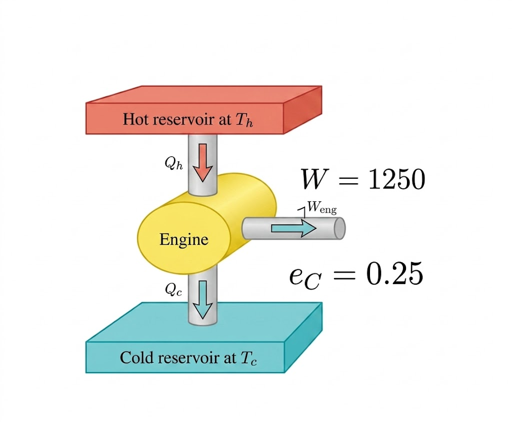

លំហាត់ជ្រើសរើសសំខាន់ៗ ត្រៀមប្រឡងសញ្ញាបត្រមធ្យមសិក្សាទុតិយភូមិ
ម៉ាស៊ីនកាកណូមួយស្រូបកម្ដៅ \(7.2 \text{ kJ}\) ក្នុងរយៈពេលមួយស៊ិចនិងដំណើរការនៅចន្លោះ សីតុណ្ហភាពពី \(450 \text{ K}\) ទៅ \(600 \text{ K}\) ។ គណនា ៖
ម៉ាស៊ីនកម្ដៅមួយស្រូបកម្ដៅ \(2 \times 10^3 \text{ J}\) ពីធុងក្ដៅក្នុងរយៈពេលមួយវដ្ដហើយបញ្ចេញកម្ដៅ \(1.5 \times 10^3 \text{ J}\) ទៅឲ្យធុងត្រជាក់ ។
ម៉ាស៊ីនកាកណូមួយដំណើរការនៅចន្លោះធុងកម្ដៅពីរដែលមានសីតុណ្ហភាព \(500 \text{ K}\) និង \(400 \text{ K}\) វាស្រូបកម្ដៅ \(10 \text{ kJ}\) ពីធុងដែលមានសីតុណ្ហភាពខ្ពស់ក្នុងរយៈពេលស៊ិចនីមួយៗ ។
ម៉ាស៊ីនអ៊ីដេអាល់មួយដំណើរការនៅចន្លោះប្រភពកម្ដៅពីរដែលមានសីតុណ្ហភាព \(500 \text{ K}\) និង \(600 \text{ K}\) វាស្រូបកម្ដៅ \(1000 \text{ J}\) ពីធុងដែលមានសីតុណ្ហភាពខ្ពស់ក្នុងរយៈពេលស៊ិចនីមួយៗ ។
គំនូសបំព្រួញខាងក្រោមតាងឲ្យម៉ាស៊ីនកម្ដៅ ។

ម៉ាស៊ីនមួយដំណើរការដោយប្រើម៉ាសប្រេងឥន្ធនៈ \(0.2 \text{ kg}\) ។ បើកម្ដៅចំហេះនៃប្រេង \(q = 10^4 \text{ J/g}\) ។
ម៉ាស៊ីនមួយមានទិន្នផល \(30 \%\) មានកម្មន្តមេកានិច \(120 \text{ kJ}\) និងដំណើរការដោយប្រើឥន្ធនៈមានម៉ាស \(0.8 \text{ kg}\) ។
រាល់វិនាទីម៉ូទ័ររថយន្តមួយបានផ្ដល់កម្ដៅ \(172 \text{ kJ}\) ពីចំហេះល្បាយឧស្ម័ននិងបញ្ចេញ \(135 \text{ kJ}\) ទៅបរិយាកាស ។
រាល់វិនាទីម៉ូទ័ររថយន្តមួយទទួលកម្ដៅ \(172 \text{ kJ}\) ពីប្រតិកម្មនៃចំហេះល្បាយឧស្ម័ន និងបំពេញ កម្មន្តមេកានិច \(37 \text{ kJ}\) រាល់វិនាទីពីស្តុងបានបញ្ជូនកម្មន្តបានការ \(34.04 \text{ kJ}\) ឲ្យភ្លៅម៉ូទ័រ ។
ម៉ូទ័របន្ទុះ \(4\) វគ្គមួយមានទិន្នផលកម្ដៅ \(25 \%\) និងទិន្នផលគ្រឿងបញ្ជូន គឺ \(90 \%\) ពេលដំណើរ ការវាទទួលថាមពលកម្ដៅចំហេះប្រេងឥន្ទនៈ \(2500 \text{ kJ}\) ។